홍대, 어디까지 가봤니?
2018 Naver Blog Hongd; font-wight: 300ae Trend Report
강민경, 강채원, 송서영, 정지혜, 홍다영
아래 지도에서는 홍대 카페로 검색되는 게시물 들의 위치 좌표들을 지도상에서 점으로 표현하였습니다.
하나의 점은 하나의 좌표를 나타내며 점의 크기는 각 카페가 언급된 게시물 수를 나타냅니다.
우리의 프로젝트에서는 map data의 시각화를 통해 따른 ‘홍대’의 확장성과,
이를 넘어 과거의 데이터를 계층적으로 구성함으로써 ‘홍대’에 관심있는 누구에게나 Insight를 제공하고자 합니다.
위 map data는 독특한 분위기의 카페가 많은 홍대의 특성을 고려하여 ‘카페’만을 대상으로 분석을 시도한 결과물입니다.

연남동, 홍익대학교를 둘러싸는 2개의 역인 합정역, 상수역 그리고 책거리를 기준으로 ‘홍대’ 지역 확장성을 살펴보겠습니다.
경의선 숲길 중, 홍대입구역 근처부터 가좌역 인근 연남동 구간은 2015년 6월에 개방되었습니다. 미국의 맨해튼 센트럴파크와 닮았다 하여 연트럴파크라는 별칭을 가지고 있습니다. 연트럴 파크의 영향으로 인근 홍대의 상권이 연남동으로까지 확장되었으며 번잡한 홍대의 분위기와는 달리 도심 속 여유를 즐기려는 젊은이들이 많이 찾고 있습니다.
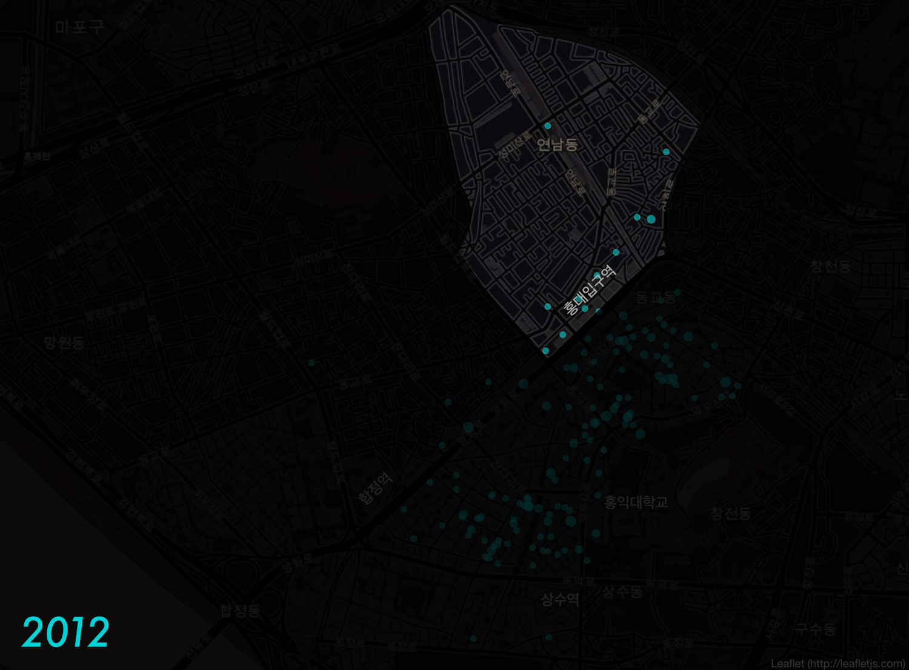
2000년대 초반과 달리 홍익대학교 인근 서교동은 상가 임대료가 폭등하였습니다. 이에 젊은 예술가들과 자영업자들이 비교적 저렴한 상수동과 합정동으로 이동하면서 자연스럽게 "홍대"가 확장된 셈입니다. 이에 따라 가난한 예술가들이 홍대에 서부 개척자의 역할을 한 것입니다.
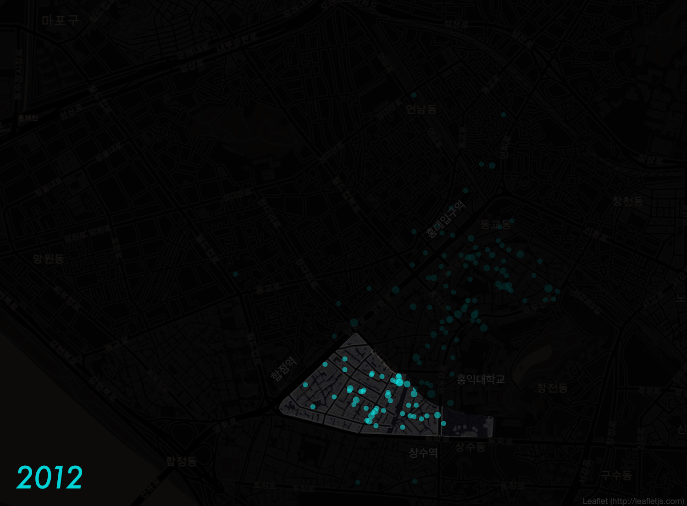
2016년 10월 28일, 홍대입구역 6번 출구부터 시작하는 경의선 책거리의 조성이 완료되었습니다. 홍대 책거리는 독서문화와 출판산업의 장려를 위해 조성된 책 테마 공간입니다. 이후 2017년부터 2018년에 걸쳐 신촌로와 서강로9길 사이를 따라 점차 밀집되어가는 카페 분포를 확인할 수 있습니다.
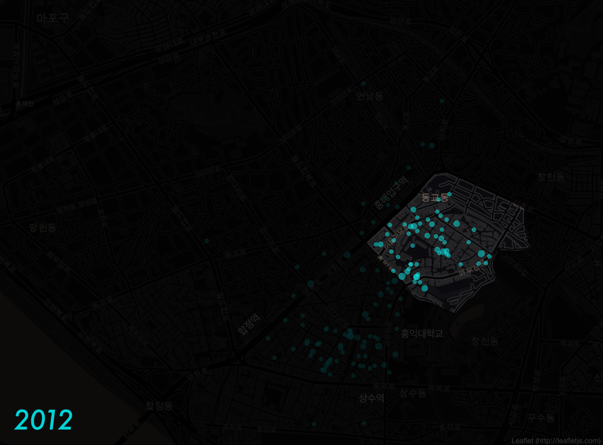그렇다면, 전체 6년 간의 포스트들을 토대로 보았을 때, 어떤 카페들이 "홍대"의 중심이었을까?
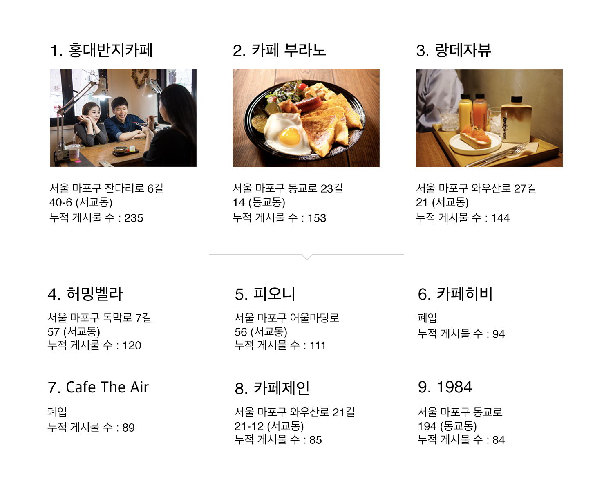년도별 카페 순위를 알아봅시다.
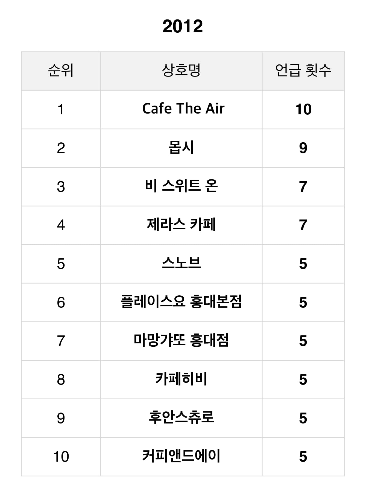 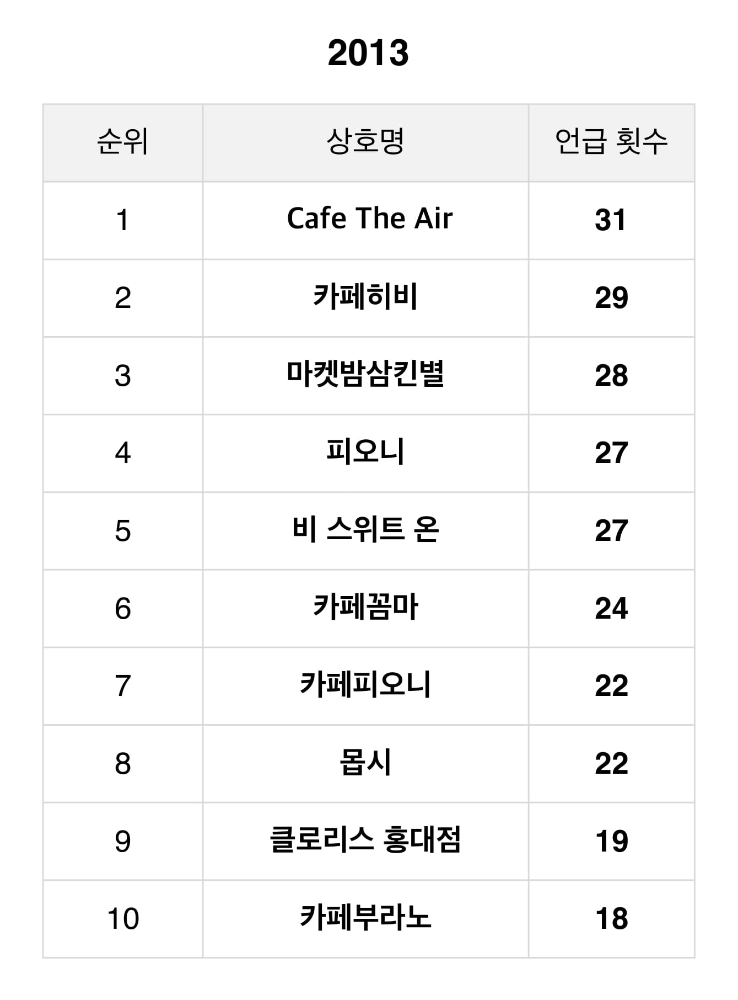 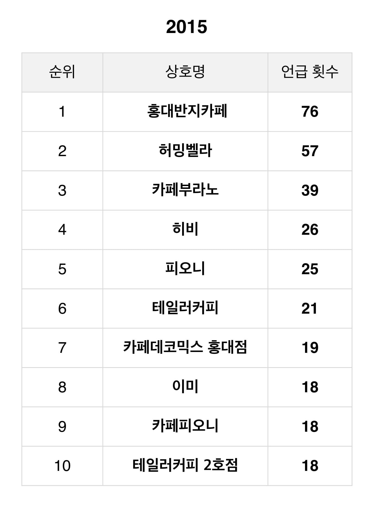
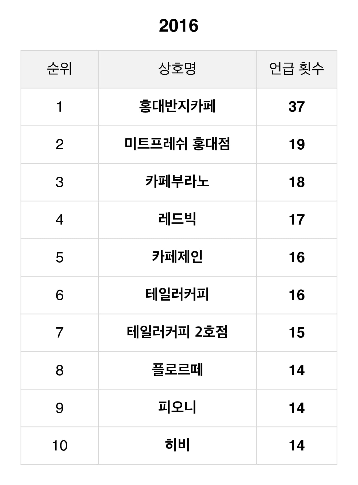
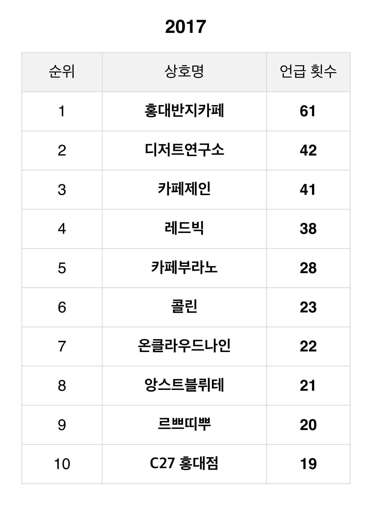
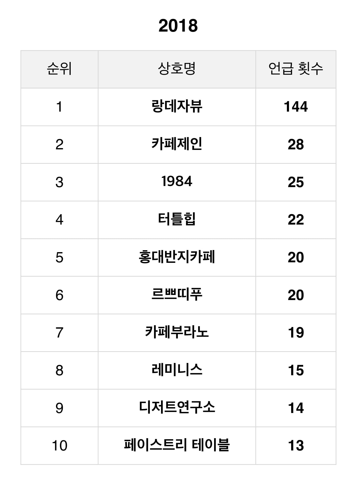
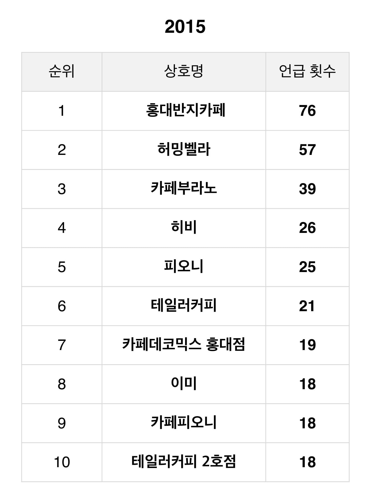
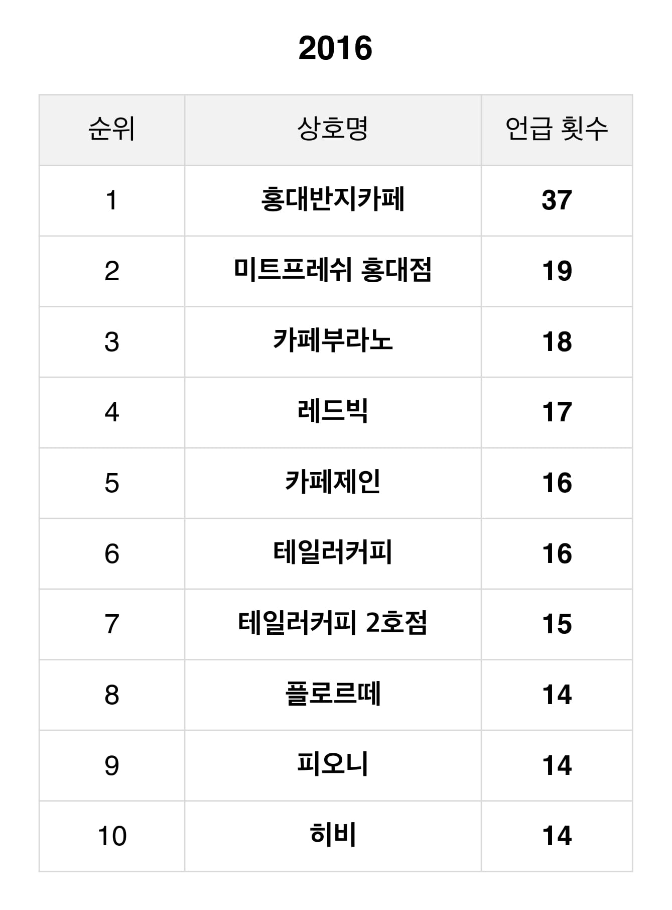
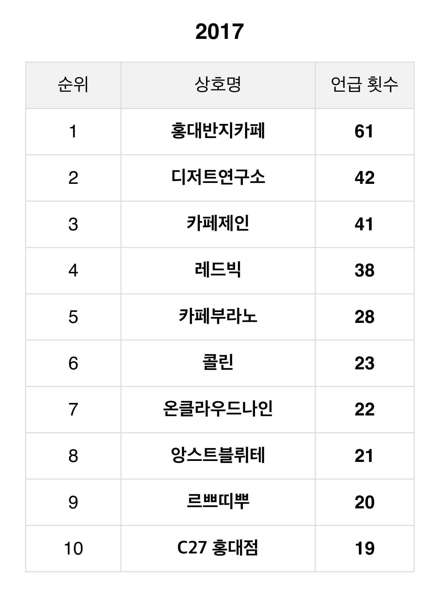
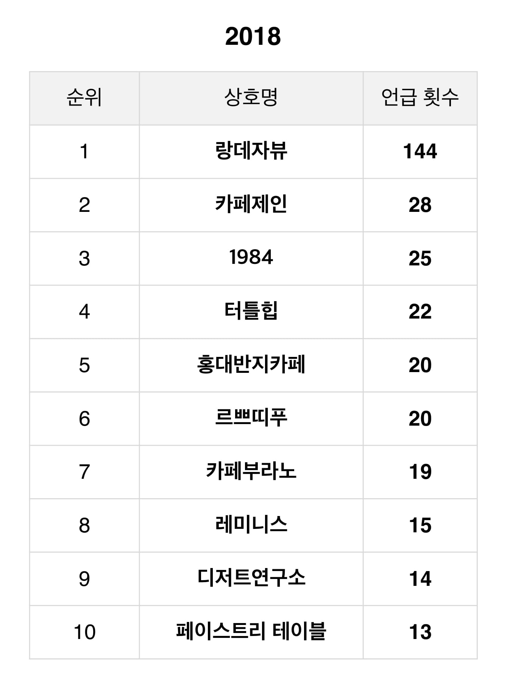

저희 조는 "홍대" 지역의 확장성을 카페로 한정하여 분석하였습니다. 총 6개년 24개분기 시간 흐름에 따라 "홍대"로 분류되는 카페의 분포를 웹으로 시각화하였습니다. 특히, 눈에 띄는 변화는 홍대 입구역 좌측 상단에 연트럴 파크와, 합정역과 상수역 사이의 서교동 그리고 신촌로 하단의 경의선 책거리에서 나타났습니다. 경의선 숲길의 개방과 폭등하는 임대료는 일부 홍대 상권의 이동으로 또다른 "홍대"를 증식하게 하는 원인이 되었습니다.
- ‘홍대’ 연관 검색어 중 카페 이외에도 맛집, 버스킹, 클럽, 데이트 등등의 키워드가 존재하므로 ‘홍대’의 확장성을 보다 포괄적인 관점에서 해석할 수 있는 가능성이 존재합니다.
- ‘홍대’의 상권의 임대료 경향과 확장성 간의 유의미한 관계가 존재하는지를 분석해 볼 수 있습니다. 이를 통해 상권이 유지되기 위한 조건을 제시할 수 있습니다.
애란선생님, 배로선생님, 김영웅님, 데잇걸즈 2 일동
- Python - Slack to communicate - Github to collaborate